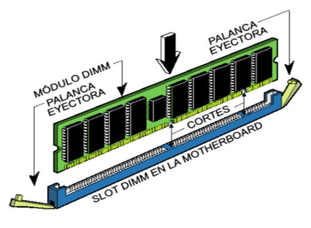

1.2.2.3 Memoria Caché
Dentro de nuestro procesador no sólo se encuentran los
componentes que hacen posible sus enormes capacidades de
computación, también hay una pequeña memoria que se
encarga de conseguir que el trabajo de nuestro
procesador pueda realizarse a la velocidad que este opera.
Es la memoria de acceso rápido de una computadora, que
guarda temporalmente las últimas informaciones procesadas.
La memoria caché es un búfer especial de memoria que
poseen las computadoras, que funciona de manera similar a
la memoria principal, pero es de menor tamaño y de acceso
más rápido. Es usada por el procesador para reducir el
tiempo de acceso a datos ubicados en la memoria principal
que se utilizan con más frecuencia.
La caché es una memoria que se sitúa entre la unidad central
de procesamiento (CPU) y la memoria de acceso
aleatorio (RAM) para acelerar el intercambio de datos.
Cuando se accede por primera vez a un dato, se hace una
copia en la caché; los accesos siguientes se realizan a dicha
copia, haciendo que sea menor el tiempo de acceso medio al
dato.
Cuando el procesador necesita leer o escribir en una
ubicación en memoria principal, primero verifica si una copia de los datos está en la memoria caché; si es así, el procesador de inmediato lee o escribe en la memoria caché,
que es mucho más rápido que de la lectura o la escritura a la
memoria principal.

Memoria caché nivel 1 ( L1).
También llamada memoria interna, se encuentra en el núcleo
del procesador. Es utilizada para almacenar y acceder a datos
e instrucciones importantes y de uso frecuente, agilizando
los procesos al ser el nivel que ofrece un tiempo de respuesta
menor. Se divide en dos subniveles:
Nivel 1 Data caché: se encarga de almacenar datos usados
frecuentemente.
Nivel 1 Instruction caché: se encarga de almacenar
instrucciones usadas frecuentemente.
Memoria caché nivel 2 (L2).
Se encarga de almacenar datos de uso frecuente, es mayor
que la caché L1, pero a costa de ser más lenta, aun así es más
rápida que la memoria principal (RAM).
Puede ser inclusiva y contener una copia del nivel 1 además
de información extra, o exclusiva y que su contenido sea
totalmente diferente de la cache L1, proporcionando así
mayor capacidad total.

Memoria caché nivel 3 ( L3).;
Es más rápida que la memoria principal (RAM), pero más
lenta que L2, ayuda a que el sistema guarde gran cantidad de
información agilizando las tareas del procesador.
En esta memoria se agiliza el acceso a datos e instrucciones
que no fueron localizadas en L1 o L2.
Al igual que la L2, puede ser inclusiva y contener una copia
de L2 además de información extra o, por el contrario, ser
exclusiva y contener información totalmente diferente a la de
los niveles anteriores, consiguiendo así una mayor capacidad
total.
